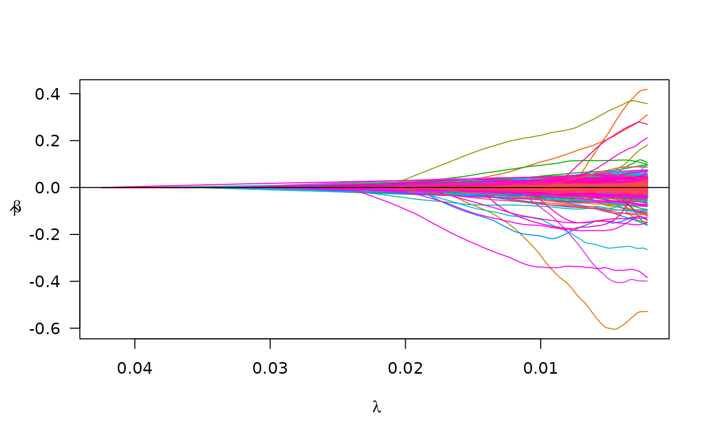
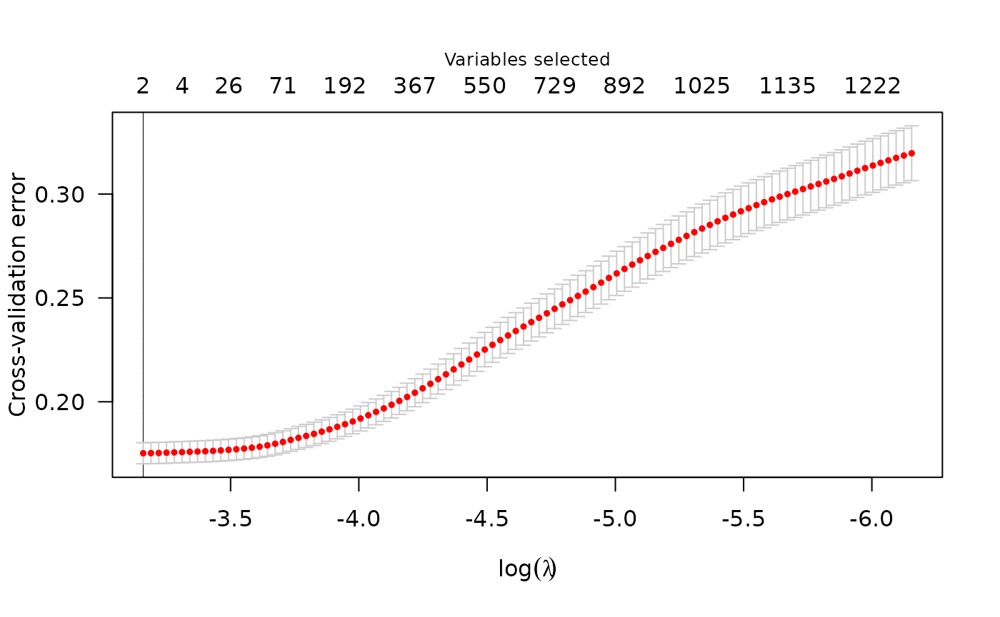

A widely-used format for storing data from genome-wide association
studies (GWAS) is the PLINK file
formats, which consists of a triplet of ‘.bed’, ‘.bed’, and ‘.fam’
files. The plmmr package is equipped to analyze data from
PLINK files. If you have data in this format, keep reading – if you want
to know more about what each of these files contains, see this
other tutorial or the PLINK documentation.
If your data is in delimited files (e.g., .txt,
.csv, etc.), read the article on analyzing data from
delimited files at
vignette("delim_files", package = "plmmr").
The plmmr package is designed to handle data so that
users can analyze large data sets. For this reason, data must be
preprocessed into a specific format. There are two steps to prepare for
analysis: (1) process the data and (2) create a design. Processing the
data means that we take the feature data and create a ‘.rds’ object that
contains your feature data in a format compatible with the
bigmemory package.
Creating a design involves standardizing the input of the features,
outcome, and penalty factor into the modeling functions
plmm() and cv_plmm().
Processing PLINK files
First, unzip your PLINK files if they are zipped. Our example data,
penncath_lite data that ships with plmmr is
zipped; if you are on MacOS or Linux, you can run this command to
unzip:
temp_dir <- tempdir() # using a temp dir -- change to fit your preference
unzip_example_data(outdir = temp_dir)
#> Unzipped files are saved in /tmp/RtmppPF3IzFor GWAS data, we have to tell plmmr how to combine
information across all three PLINK files (the .bed,
.bim, and .fam files). We do this with
process_plink().
Here, we will create the files we want in a temporary directory just
for the sake of example. Users can specify the folder of their choice
for rds_dir, as shown below:
# temp_dir <- tempdir() # using a temporary directory (if you didn't already create one above)
plink_data <- process_plink(data_dir = temp_dir,
data_prefix = "penncath_lite",
rds_dir = temp_dir,
rds_prefix = "imputed_penncath_lite",
# imputing the mode to address missing values
impute_method = "mode",
# overwrite existing files in temp_dir
# (you can turn this feature off if you need to)
overwrite = TRUE,
# turning off parallelization -
# leaving this on causes problems knitting this vignette
parallel = FALSE)
#>
#> Preprocessing penncath_lite data:
#> Creating penncath_lite.rds
#>
#> There are 1401 observations and 4367 genomic features in the specified data files, representing chromosomes 1 - 22
#> There are a total of 3514 SNPs with missing values
#> Of these, 13 are missing in at least 50% of the samples
#>
#> Imputing the missing (genotype) values using mode method
#>
#> process_plink() completed
#> Processed files now saved as /tmp/RtmppPF3Iz/imputed_penncath_lite.rdsYou’ll see a lot of messages printed to the console here … the result
of all this is the creation of 3 files:
imputed_penncath_lite.rds and
imputed_penncath_lite.bk contain the data. 1 These will show up in
the folder where the PLINK data is. What is returned is a filepath. The
.rds object at this filepath contains the processed data,
which we will now use to create our design.
For didactic purposes, let’s examine what’s in
imputed_penncath_lite.rds using the readRDS()
function (Note Don’t do this in your analysis - the
section below reads the data into memory. This is just for
illustration):
pen <- readRDS(plink_data) # notice: this is a `processed_plink` object
str(pen) # note: genotype data is *not* in memory
#> List of 5
#> $ X :Formal class 'big.matrix.descriptor' [package "bigmemory"] with 1 slot
#> .. ..@ description:List of 13
#> .. .. ..$ sharedType: chr "FileBacked"
#> .. .. ..$ filename : chr "imputed_penncath_lite.bk"
#> .. .. ..$ dirname : chr "/tmp/RtmppPF3Iz/"
#> .. .. ..$ totalRows : int 1401
#> .. .. ..$ totalCols : int 4367
#> .. .. ..$ rowOffset : num [1:2] 0 1401
#> .. .. ..$ colOffset : num [1:2] 0 4367
#> .. .. ..$ nrow : num 1401
#> .. .. ..$ ncol : num 4367
#> .. .. ..$ rowNames : NULL
#> .. .. ..$ colNames : NULL
#> .. .. ..$ type : chr "double"
#> .. .. ..$ separated : logi FALSE
#> $ map:'data.frame': 4367 obs. of 6 variables:
#> ..$ chromosome : int [1:4367] 1 1 1 1 1 1 1 1 1 1 ...
#> ..$ marker.ID : chr [1:4367] "rs3107153" "rs2455124" "rs10915476" "rs4592237" ...
#> ..$ genetic.dist: int [1:4367] 0 0 0 0 0 0 0 0 0 0 ...
#> ..$ physical.pos: int [1:4367] 2056735 3188505 4275291 4280630 4286036 4302161 4364564 4388885 4606471 4643688 ...
#> ..$ allele1 : chr [1:4367] "C" "T" "T" "G" ...
#> ..$ allele2 : chr [1:4367] "T" "C" "C" "A" ...
#> $ fam:'data.frame': 1401 obs. of 6 variables:
#> ..$ family.ID : int [1:1401] 10002 10004 10005 10007 10008 10009 10010 10011 10012 10013 ...
#> ..$ sample.ID : int [1:1401] 1 1 1 1 1 1 1 1 1 1 ...
#> ..$ paternal.ID: int [1:1401] 0 0 0 0 0 0 0 0 0 0 ...
#> ..$ maternal.ID: int [1:1401] 0 0 0 0 0 0 0 0 0 0 ...
#> ..$ sex : int [1:1401] 1 2 1 1 1 1 1 2 1 2 ...
#> ..$ affection : int [1:1401] 1 1 2 1 2 2 2 1 2 -9 ...
#> $ n : int 1401
#> $ p : int 4367
#> - attr(*, "class")= chr "processed_plink"
# notice: no more missing values in X
any(is.na(pen$genotypes[,]))
#> [1] FALSECreating a design
Now we are ready to create a plmm_design, which is an
object with the pieces we need for our model: a design matrix \mathbf{X}, an outcome vector \mathbf{y}, and a the vector with the penalty
factor indicators (1 = feature will be penalized, 0 = feature will not
be penalized).
As a side note: in GWAS studies, it is typical to include some
non-genomic factors as unpenalized covariates as part of the model. For
instance, you may want to adjust for sex or age (as shown in the example
below) – these are factors that you want to ensure are always included
in the selected model. The plmmr package allows you to
include these additional unpenalized predictors via the ‘add_predictor’
and ‘predictor_id’ options, both of which are passed through
create_design() to the internal function
create_design_filebacked(). An example with these options
is included in the create_design() documentation.
# get outcome data
penncath_pheno <- read.csv(find_example_data(path = 'penncath_clinical.csv'))
phen <- data.frame(FamID = as.character(penncath_pheno$FamID),
CAD = penncath_pheno$CAD)
# prepare a data.frame of the predictors for which we want to adjust:
other_predictors <- penncath_pheno[,c('FamID', 'sex', 'age')]
other_predictors$FamID <- as.character(other_predictors$FamID)
pen_design <- create_design(data_file = plink_data,
feature_id = "FID",
rds_dir = temp_dir,
new_file = "std_penncath_lite",
add_outcome = phen,
outcome_id = "FamID",
outcome_col = "CAD",
add_predictor = other_predictors,
predictor_id = 'FamID',
logfile = "design",
# again, overwrite if needed; use with caution
overwrite = TRUE)
#>
#> Aligning external data with the feature data by FamID
#> Adding predictors from external data.
#> Aligning IDs between fam and predictor files
#> Column-wise combining data sets
#> | | | 0% | | | 1% | |= | 1% | |= | 2% | |== | 2% | |== | 3% | |== | 4% | |=== | 4% | |=== | 5% | |==== | 5% | |==== | 6% | |===== | 6% | |===== | 7% | |===== | 8% | |====== | 8% | |====== | 9% | |======= | 9% | |======= | 10% | |======= | 11% | |======== | 11% | |======== | 12% | |========= | 12% | |========= | 13% | |========= | 14% | |========== | 14% | |========== | 15% | |=========== | 15% | |=========== | 16% | |============ | 16% | |============ | 17% | |============ | 18% | |============= | 18% | |============= | 19% | |============== | 19% | |============== | 20% | |============== | 21% | |=============== | 21% | |=============== | 22% | |================ | 22% | |================ | 23% | |================ | 24% | |================= | 24% | |================= | 25% | |================== | 25% | |================== | 26% | |=================== | 26% | |=================== | 27% | |=================== | 28% | |==================== | 28% | |==================== | 29% | |===================== | 29% | |===================== | 30% | |===================== | 31% | |====================== | 31% | |====================== | 32% | |======================= | 32% | |======================= | 33% | |======================= | 34% | |======================== | 34% | |======================== | 35% | |========================= | 35% | |========================= | 36% | |========================== | 36% | |========================== | 37% | |========================== | 38% | |=========================== | 38% | |=========================== | 39% | |============================ | 39% | |============================ | 40% | |============================ | 41% | |============================= | 41% | |============================= | 42% | |============================== | 42% | |============================== | 43% | |============================== | 44% | |=============================== | 44% | |=============================== | 45% | |================================ | 45% | |================================ | 46% | |================================= | 46% | |================================= | 47% | |================================= | 48% | |================================== | 48% | |================================== | 49% | |=================================== | 49% | |=================================== | 50% | |=================================== | 51% | |==================================== | 51% | |==================================== | 52% | |===================================== | 52% | |===================================== | 53% | |===================================== | 54% | |====================================== | 54% | |====================================== | 55% | |======================================= | 55% | |======================================= | 56% | |======================================== | 56% | |======================================== | 57% | |======================================== | 58% | |========================================= | 58% | |========================================= | 59% | |========================================== | 59% | |========================================== | 60% | |========================================== | 61% | |=========================================== | 61% | |=========================================== | 62% | |============================================ | 62% | |============================================ | 63% | |============================================ | 64% | |============================================= | 64% | |============================================= | 65% | |============================================== | 65% | |============================================== | 66% | |=============================================== | 66% | |=============================================== | 67% | |=============================================== | 68% | |================================================ | 68% | |================================================ | 69% | |================================================= | 69% | |================================================= | 70% | |================================================= | 71% | |================================================== | 71% | |================================================== | 72% | |=================================================== | 72% | |=================================================== | 73% | |=================================================== | 74% | |==================================================== | 74% | |==================================================== | 75% | |===================================================== | 75% | |===================================================== | 76% | |====================================================== | 76% | |====================================================== | 77% | |====================================================== | 78% | |======================================================= | 78% | |======================================================= | 79% | |======================================================== | 79% | |======================================================== | 80% | |======================================================== | 81% | |========================================================= | 81% | |========================================================= | 82% | |========================================================== | 82% | |========================================================== | 83% | |========================================================== | 84% | |=========================================================== | 84% | |=========================================================== | 85% | |============================================================ | 85% | |============================================================ | 86% | |============================================================= | 86% | |============================================================= | 87% | |============================================================= | 88% | |============================================================== | 88% | |============================================================== | 89% | |=============================================================== | 89% | |=============================================================== | 90% | |=============================================================== | 91% | |================================================================ | 91% | |================================================================ | 92% | |================================================================= | 92% | |================================================================= | 93% | |================================================================= | 94% | |================================================================== | 94% | |================================================================== | 95% | |=================================================================== | 95% | |=================================================================== | 96% | |==================================================================== | 96% | |==================================================================== | 97% | |==================================================================== | 98% | |===================================================================== | 98% | |===================================================================== | 99% | |======================================================================| 99% | |======================================================================| 100%
#> There are 62 constant features in the data
#> Subsetting data to exclude constant features (e.g., monomorphic SNPs)
#> Column-standardizing the design matrix...
#> Standardization completed at 2025-02-18 18:02:46
#> Done with standardization. File formatting in progress
# examine the design - notice the components of this object
pen_design_rds <- readRDS(pen_design)
str(pen_design_rds)
#> List of 18
#> $ X_colnames : chr [1:4367] "rs3107153" "rs2455124" "rs10915476" "rs4592237" ...
#> $ X_rownames : chr [1:1401] "10002" "10004" "10005" "10007" ...
#> $ n : int 1401
#> $ p : int 4367
#> $ is_plink : logi TRUE
#> $ outcome_idx : int [1:1401] 1 2 3 4 5 6 7 8 9 10 ...
#> $ y : Named int [1:1401] 1 1 1 1 1 1 1 1 1 0 ...
#> ..- attr(*, "names")= chr [1:1401] "CAD1" "CAD2" "CAD3" "CAD4" ...
#> $ std_X_rownames: chr [1:1401] "10002" "10004" "10005" "10007" ...
#> $ unpen : int [1:2] 1 2
#> $ unpen_colnames: chr [1:2] "sex" "age"
#> $ ns : int [1:4307] 1 2 3 4 5 6 7 8 9 10 ...
#> $ std_X_colnames: chr [1:4307] "sex" "age" "rs3107153" "rs2455124" ...
#> $ std_X :Formal class 'big.matrix.descriptor' [package "bigmemory"] with 1 slot
#> .. ..@ description:List of 13
#> .. .. ..$ sharedType: chr "FileBacked"
#> .. .. ..$ filename : chr "std_penncath_lite.bk"
#> .. .. ..$ dirname : chr "/tmp/RtmppPF3Iz/"
#> .. .. ..$ totalRows : int 1401
#> .. .. ..$ totalCols : int 4307
#> .. .. ..$ rowOffset : num [1:2] 0 1401
#> .. .. ..$ colOffset : num [1:2] 0 4307
#> .. .. ..$ nrow : num 1401
#> .. .. ..$ ncol : num 4307
#> .. .. ..$ rowNames : NULL
#> .. .. ..$ colNames : NULL
#> .. .. ..$ type : chr "double"
#> .. .. ..$ separated : logi FALSE
#> $ std_X_n : num 1401
#> $ std_X_p : num 4307
#> $ std_X_center : num [1:4307] 1.33119 55.72448 0.00785 0.35974 1.01213 ...
#> $ std_X_scale : num [1:4307] 0.4706 9.3341 0.0883 0.7783 0.8636 ...
#> $ penalty_factor: num [1:4307] 0 0 1 1 1 1 1 1 1 1 ...
#> - attr(*, "class")= chr "plmm_design"A key part of what create_design() is doing is
standardizing the columns of the genotype matrix. Below is a didactic
example showing that the columns of the std_X element in
our design have mean = 0 and variance = 1. Note again
that this is not something you should do in your analysis – this reads
the data into memory.
# we can check to see that our data have been standardized
std_X <- attach.big.matrix(pen_design_rds$std_X)
colMeans(std_X[,]) |> summary() # columns have mean zero...
#> Min. 1st Qu. Median Mean 3rd Qu. Max.
#> -1.356e-16 -2.336e-17 3.814e-19 1.006e-18 2.524e-17 2.635e-16
apply(std_X[,], 2, var) |> summary() # ... & variance 1
#> Min. 1st Qu. Median Mean 3rd Qu. Max.
#> 1.001 1.001 1.001 1.001 1.001 1.001Fitting a model
Now that we have a design object, we are ready to fit a model. By
default, the model fitting results are saved as files in the folder
specified in the rds_dir argument of plmmm. If
you want to return the model fitting results, set
return_fit = TRUE in plmm().
pen_fit <- plmm(design = pen_design,
trace = T,
return_fit = T)
#> Note: The design matrix is being returned as a file-backed big.matrix object -- see bigmemory::big.matrix() documentation for details.
#> Reminder: the X that is returned here is column-standardized
#> Warning in plmm_checks(design, K = K, diag_K = diag_K, eta_star = eta_star, : Note: plmmr depends on the package bigalgebra, the current GitHub
#>
#> version of which is throwing some warnings for filebacked analysis.
#>
#> See https://github.com/fbertran/bigalgebra/issues/2
#>
#> If you see a warning about 'stack imbalance' appear while you are
#>
#> fitting a model with plmm() or cv_plmm(), we recommend downloading
#>
#> the last stable version of bigalebra.
#>
#> This message is displayed after your first call to fit a model
#>
#> using filebacked data.
#> Input data passed all checks at 2025-02-18 18:02:47
#> Starting decomposition.
#> Calculating the eigendecomposition of K
#> Eigendecomposition finished at 2025-02-18 18:02:49
#> Beginning rotation ('preconditioning').
#> Rotation (preconditiong) finished at 2025-02-18 18:02:49
#> Setting up lambda/preparing for model fitting.
#> Beginning model fitting.
#> Model fitting finished at 2025-02-18 18:02:52
#> Beta values are estimated -- almost done!
#> Formatting results (backtransforming coefs. to original scale).
#> Model ready at 2025-02-18 18:02:52
# you can turn off the trace messages by letting trace = F (default)We examine our model results below:
summary(pen_fit, idx = 50)
#> lasso-penalized regression model with n=1401, p=4370 at lambda=0.00964
#> -------------------------------------------------
#> The model converged
#> -------------------------------------------------
#> # of non-zero coefficients: 650
#> -------------------------------------------------
plot(pen_fit)
Cross validation
To choose a tuning parameter for a model, plmmr offers a
cross validation method:
cv_fit <- cv_plmm(design = pen_design,
type = "blup",
return_fit = T,
trace = T)
#> Note: The design matrix is being returned as a file-backed big.matrix object -- see bigmemory::big.matrix() documentation for details.
#> Reminder: the X that is returned here is column-standardized
#> Starting decomposition.
#> Calculating the eigendecomposition of K
#> Beginning rotation ('preconditioning').
#> Rotation (preconditiong) finished at 2025-02-18 18:02:54
#> Setting up lambda/preparing for model fitting.
#> Beginning model fitting.
#> Model fitting finished at 2025-02-18 18:02:57
#> 'Fold' argument is either NULL or missing; assigning folds randomly (by default).
#>
#> To specify folds for each observation, supply a vector with fold assignments.
#>
#> Starting cross validation
#> | | | 0%Beginning eigendecomposition in fold 1 :
#> Starting decomposition.
#> Calculating the eigendecomposition of K
#> Fitting model in fold 1 :
#> Beginning rotation ('preconditioning').
#> Rotation (preconditiong) finished at 2025-02-18 18:02:58
#> Beginning model fitting.
#> Model fitting finished at 2025-02-18 18:03:00
#> | |============== | 20%
#> Beginning eigendecomposition in fold 2 :
#> Starting decomposition.
#> Calculating the eigendecomposition of K
#> Fitting model in fold 2 :
#> Beginning rotation ('preconditioning').
#> Rotation (preconditiong) finished at 2025-02-18 18:03:01
#> Beginning model fitting.
#> Model fitting finished at 2025-02-18 18:03:03
#> | |============================ | 40%Beginning eigendecomposition in fold 3 :
#> Starting decomposition.
#> Calculating the eigendecomposition of K
#> Fitting model in fold 3 :
#> Beginning rotation ('preconditioning').
#> Rotation (preconditiong) finished at 2025-02-18 18:03:04
#> Beginning model fitting.
#> Model fitting finished at 2025-02-18 18:03:07
#> | |========================================== | 60%Beginning eigendecomposition in fold 4 :
#> Starting decomposition.
#> Calculating the eigendecomposition of K
#> Fitting model in fold 4 :
#> Beginning rotation ('preconditioning').
#> Rotation (preconditiong) finished at 2025-02-18 18:03:08
#> Beginning model fitting.
#> Model fitting finished at 2025-02-18 18:03:10
#> | |======================================================== | 80%Beginning eigendecomposition in fold 5 :
#> Starting decomposition.
#> Calculating the eigendecomposition of K
#> Fitting model in fold 5 :
#> Beginning rotation ('preconditioning').
#> Rotation (preconditiong) finished at 2025-02-18 18:03:11
#> Beginning model fitting.
#> Model fitting finished at 2025-02-18 18:03:14
#> | |======================================================================| 100%There are plot and summary methods for CV models as well:
summary(cv_fit) # summary at lambda value that minimizes CV error
#> lasso-penalized model with n=1401 and p=4370
#> At minimum cross-validation error (lambda=0.0424):
#> -------------------------------------------------
#> Nonzero coefficients: 2
#> Cross-validation error (deviance): 0.18
#> Scale estimate (sigma): 0.418
plot(cv_fit)
Details: create_design() for PLINK data
The call to create_design() involves these steps:
Integrate in the external phenotype information, if supplied. Note: Any samples in the PLINK data that do not have a phenotype value in the specified additional phenotype file will be removed from the analysis.
Identify missing values in both samples and SNPs/features.
Impute missing values per user’s specified method. See R documentation for
bigsnpr::snp_fastImputeSimple()for more details. Note: the plmmr package cannot fit models if datasets have missing values. All missing values must be imputed or subset out before analysis.Integrate in the external predictor information, if supplied. This could be a matrix of meta-data (e.g., age, principal components, etc.). Note: If there are samples in the supplied file that are not included in the PLINK data, these will be removed. For example, if you have more phenotyped participants than genotyped participants in your study,
plmmr::create_design()will create a matrix of data representing all the genotyped samples that also have data in the supplied external phenotype file.Create a design matrix that represents the nonsingular features and the samples that have predictor and phenotype information available (in the case where external data are supplied).
Standardize the design matrix so that all columns have mean of 0 and variance of 1.